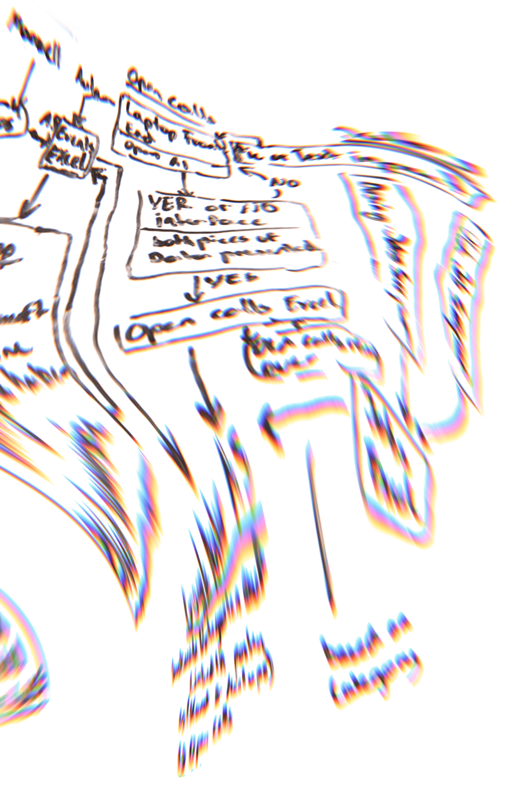

01101111 01100111
01110010 01100001
01101101 01101101
01101001 01101110
01100111 00100000
00100110 00100000
01000001 01001001

custom ai solutions
I build lightweight, custom AI tools and browser-based interfaces tailored to specific internal and external data workflows. The goal is always to make data processing accessible and fast, without adding bloated infrastructure.

For example, I set up custom web apps through Google AI Studio and specialized scripts that can be launched directly from a terminal or used in the browser to parse, sort, and extract complex information on the fly. Once the data is structured, it can power all kinds of automated systems:
- Audience Targeting: Segmenting content and listings to reach the right people more effectively.
- Automated Newsletters: Generating relevant, curated updates without having to write or format everything from scratch.
- Calendar & Schedule Management: Feeding clean, date-specific entries directly into internal workflows or public community calendars.
impressum
Angaben gemäß § 5 TMG
Jan-Luca Ahlemeyer
Dientzenhoferstraße 20
80937 München
Deutschland
Kontakt
Mail: janluca.ahlemeyer(at)gmail.com (https://gmail.com)
Verantwortlich nach § 18 Abs. 2 MStV
Jan-Luca Ahlemeyer, Dientzenhoferstraße 20, 80937 München
Haftung für Inhalte
Als Diensteanbieter bin ich gemäß § 7 Abs. 1 TMG für eigene Inhalte verantwortlich. Nach §§ 8–10 TMG bin ich jedoch nicht verpflichtet, übermittelte oder gespeicherte fremde Informationen zu überwachen.
Urheberrecht
Alle Inhalte dieser Website unterliegen dem deutschen Urheberrecht. Vervielfältigung oder Nutzung bedarf der schriftlichen Zustimmung des Autors.
Personal portfolio by Jan-Luca Ahlemeyer, Munich. All content is protected by German copyright law.
I build custom AI applications focused on web scraping and data interpretation. Leveraging models from Gemini and OpenAI, I create pipelines to efficiently analyze and structure complex datasets. Additionally, I am highly proficient in AI image generation and "vibe coding," using tools like Midjourney, DaVinci, Codex, Antigravity, and Gemini to streamline creative and technical workflows.
ai scrapers
Job offerings view code
Built with Python, BeautifulSoup, and Aiogram, this automation pipeline scrapes creative job listings from cultural boards. Leveraging an AI model, it categorizes opportunities by field and automatically dispatches them to dedicated Telegram threads, streamlining the job search process for creative professionals.
Funding & Submission view code
This project explores how web scraping and AI can make cultural funding opportunities easier to discover and understand. The scraper collects current calls and funding programs from relevant Munich sources, extracts key information such as deadlines, eligibility, and funding amounts, and transforms it into structured, accessible data. The aim is to reduce manual research and make opportunities easier to find for people working in the creative sector.
data
interpretation &
decision making
A central focus of my work is turning unstructured, messy information into actionable data for better decision-making. Grounded in an M.Sc. in Human Factors & Engineering Psychology, I approach data interpretation through the lens of human cognitive architecture—designing workflows that align with how people naturally perceive, process, and act on information.
Cognitive psychology demonstrates that human working memory is strictly limited in its processing capacity. When confronted with large volumes of raw, fragmented inputs, cognitive overload quickly impairs reasoning, pattern recognition, and sound judgment. People struggle not from an inability to think, but from the severe bandwidth bottlenecks of holding, filtering, and synthesizing noise.
By leveraging AI to parse, contextualize, and hierarchically structure complex data, we offload extraneous cognitive burden. This preserves vital working memory and mental bandwidth for what humans do best: strategic reasoning, contextual evaluation, creative problem-solving, and making well-grounded decisions with clarity.